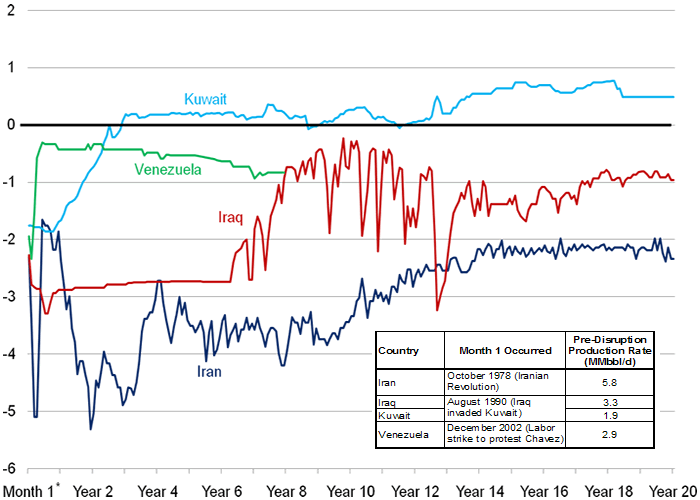
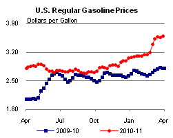
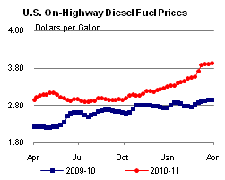
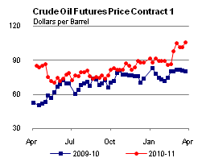
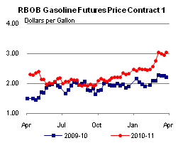
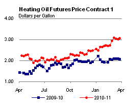
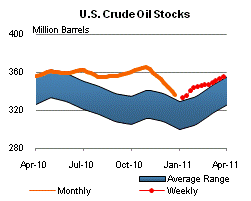
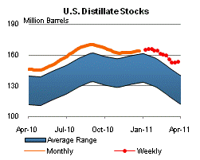
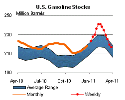
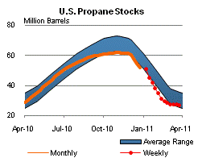

Released: March 30, 2011
Next Release: April 6, 2011
Effects of crude oil supply disruptions: how long can they last?
Recent events in the Middle East and North Africa region have unsettled an already tightening oil market, leaving market participants to evaluate and cope with the possible short- and long-term effects of both current and potential supply disruptions. While events that cause oil disruptions may be transitory, their impact on oil production levels can persist for an extended period. Past experience suggests that the absences of internal discord and external conflicts or sanctions are important conditions for a recovery in production.
This edition of This Week In Petroleum reviews the gross production impacts of three past disruptions: the Iranian revolution of 1978-1979, the Iraqi invasion of Kuwait in 1990, and the Venezuelan strike in 2002 (Figure 1). Historically, the disrupted volumes are initially replaced mainly with the drawdown of inventories and then with increased production from other countries that have the capacity to increase output quickly. When new production arrives to help replace lost supplies, we can lose sight of the length of the loss from the disruption and subsequent events.
Figure 1. Change in crude oil production from pre-disruption level
million barrels per day (MMbbl/d)

| * Note - Month 1 shows the change in daily production volume in the first month of each disruption as compared to the average daily production in the three months prior to the disruption. The table shows the pre-disruption daily average production rate during the three months prior to the disruption. Source: U.S. Energy Information Administration, Monthly Energy |
The Iranian revolution, which began in late 1978, resulted in an average drop of 3.9 million barrels per day (MMbbl/d) in Iran's crude oil production over the 1978 to 1981 period, with the initial supply loss reaching nearly 90 percent of total Iranian production in January 1979. However, much of this lost production was offset by increases in output from other Organization of Petroleum Exporting Countries (OPEC) members, particularly from Iran's Persian Gulf neighbors. While some of Iran's production returned within two years, Iran's production in 2010 was more than 1.5 MMbbl/d below its average level in 1977, the year before the revolution began. Similarly, when Iraq invaded Kuwait on August 2, 1990, oil supplies from these two countries were disrupted, causing a sudden crude oil price run-up. Immediately following the invasion, nearly all of Kuwait's and Iraq's oil production was taken offline. The peak lost production of about 4.3 MMbbl/d of combined Iraqi and Kuwaiti crude oil tested markets.
While Kuwait's oil wells suffered extensive damage from sabotage by retreating Iraqi forces, the country emerged from the war free of both internal discord and external interference with its recovery efforts, which began immediately following the withdrawal of Iraqi forces. That created a favorable environment for a recovery of production. Despite the significant field damage, average annual Kuwaiti oil production exceeded pre-disruption levels in less than four years. In contrast, Iraq, which has at various times over the past 20 years faced external sanctions, war, and internal strife, has not seen its production fully recover. In 2010, Iraq's production averaged 2.4 MMbbl/d, compared with 3.5 MMbbl/d, the pre-disruption 1990 monthly peak.
The December 2002 Venezuelan strike initially disrupted two-thirds of Venezuela's 3.0 MMbbl/d November 2002 production. OPEC members Saudi Arabia and Kuwait have crude oils similar in quality to the Venezuelan crude oils, and, following the strike, these countries increased production to partially offset Venezuelan losses. Within a year, Venezuelan production returned to about 85 percent of its pre-strike level. While the strike officially ended in February 2003, Venezuela's production has never returned to its pre-strike level. EIA estimates Venezuela's current production at roughly 2.1 MMbbl/d.
Past events may not be an indication of how long it will take to restore Libya's production, currently estimated to be at a near-complete shut-in. The extent and duration of Libya's supply disruption will depend on several factors. Much will depend on the political outcome and the acceptance of the government in power by both the Libyan people and the international community following the end of hostilities. Sanctions would need to be lifted to allow for international participation (both in terms of investment and trade) in Libya's oil sector. Following commercial and contractual negotiations, any infrastructure that has been damaged will have to be repaired and the knowledge base will have to return to the country before production can begin to ramp up. In light of these considerations, it is not surprising that the world crude market still reflects large uncertainties.
Retail gasoline and diesel prices show weekly increase
The U.S. average retail price of regular gasoline gained more than three cents per gallon last week. At $3.60 per gallon, average price of gasoline is $0.80 per gallon higher than last year at this time. The biggest increase in the country occurred on the West Coast, where gasoline prices were up six cents and remained the most expensive of the major regions at $3.92 per gallon. In the Rocky Mountain region, gasoline prices added more than five cents, but prices there remained the least expensive in the country at $3.44 per gallon. The Gulf Coast saw a four-cent increase, and the Midwest average price was more than three cents higher on the week. Rounding out the regions, gasoline prices on the East Coast gained about two cents.
On-highway diesel prices also rose last week, with the national average up two and a half cents. At $3.93 per gallon, diesel is $0.99 per gallon higher than last year at this time. Similar to gasoline, the biggest regional price increase was seen on the West Coast, where the average price was up a nickel versus last week. The West Coast's average diesel price of $4.16 per gallon is the highest in the country. The Rocky Mountain region saw its average price climb more than three cents, while the Midwest price was up just under three cents. Gulf Coast diesel prices increased almost two cents from last week, and on the East Coast, diesel prices were about a penny higher.
Propane stock levels remain steady
As winter heating season comes to a close, propane inventories across the Nation have started to level out. Total U.S. propane stocks fell just 0.1 million barrels last week to end at 26.9 million barrels. The Gulf Coast region drew 0.9 million barrels of propane inventory, while the Midwest region added 0.8 million barrels. The East Coast and Rocky Mountain/West Coast regions showed only slight changes. Propylene non-fuel use inventories represented 6.5 percent of total propane inventories.
Text from the previous editions of This Week In Petroleum is accessible through a link at the top right-hand corner of this page.
|  |  | ||||||
| Retail Data | Changes From | Retail Data | Changes From | ||||
| 03/28/11 | Week | Year | 03/28/11 | Week | Year | ||
| Gasoline | 3.596 | Diesel Fuel | 3.932 | ||||
|  |  | ||||||||||||||||||||||||||
|
 | ||||||||||||||||||||||||||
| *Note: Crude Oil Price in Dollars per Barrel. | |||||||||||||||||||||||||||
|  |  | ||||||
|  |  | ||||||
| Stocks Data | Changes From | Stocks Data | Changes From | ||||
| 03/25/11 | Week | Year | 03/25/11 | Week | Year | ||
| Crude Oil | 355.7 | Distillate | 153.3 | ||||
| Gasoline | 217.0 | Propane | 26.895 | ||||